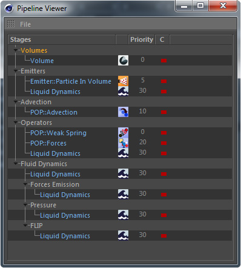

Pipeline Viewer

The Pipeline Viewer takes you inside the pipeline of the currently selected Effex scene (or the scene that the currently selected node belongs to).
All the operating nodes such as Emitters, POPs, Dynamics etc., they
are all displayed in the Pipeline Viewer.
Note:
Container nodes, so nodes that are only used for data storage, such as a Particle Group or a Grid Channel, are NOT displayed in the pipeline viewer. Only nodes that actually create or modify data will be displayed.
Container nodes, so nodes that are only used for data storage, such as a Particle Group or a Grid Channel, are NOT displayed in the pipeline viewer. Only nodes that actually create or modify data will be displayed.
But the important aspect is that it shows you when exactly your nodes are executed in the internal pipeline.
Furthermore it supports dragging nodes around to change their priority and the pipeline stage they are executed in.
Note:
Certain nodes are evaluated several times in the pipeline because they are compound nodes (currently only the Dynamics nodes).
These nodes cannot be rearranged in the Pipeline Viewer.
Certain nodes are evaluated several times in the pipeline because they are compound nodes (currently only the Dynamics nodes).
These nodes cannot be rearranged in the Pipeline Viewer.
Wanna see a quickstart video?